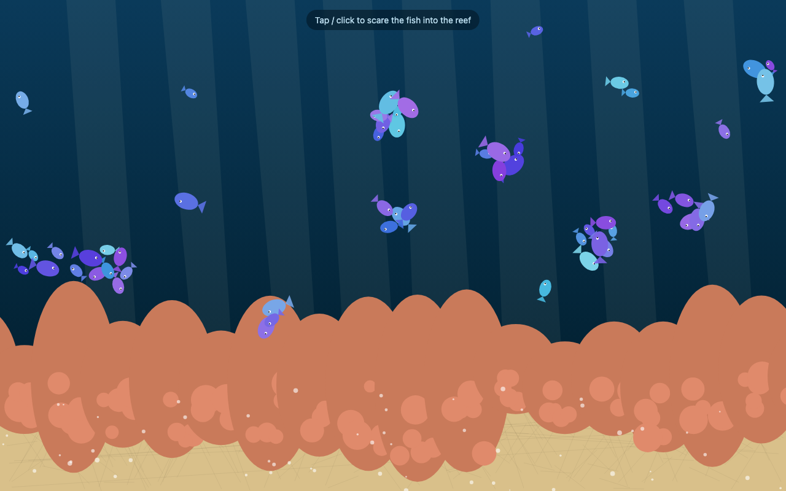
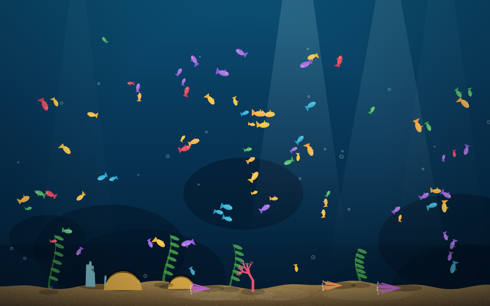
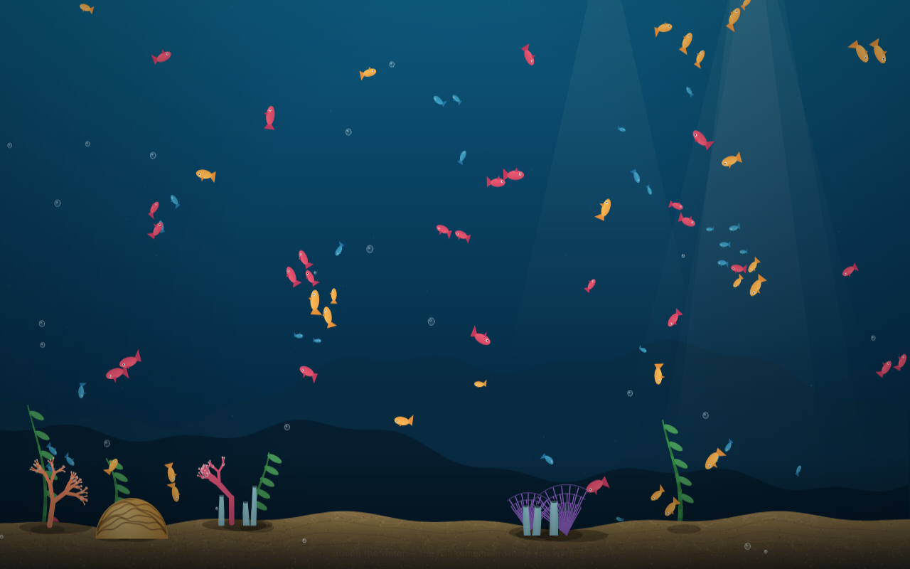
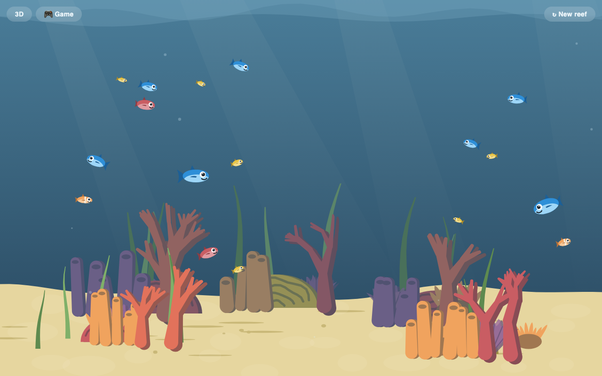

Friendly Competition
The Fish Slop saga: 1. Hosting Fish Slop · 2. Mugging the mugger · 3. Overachiever · 4. Friendly Competition
The Local AI saga: 1. Little Gemma vs Big Desk · 2. Three Different OCRs · 3. Friendly Competition · 4. 95% Done, 100% Blue Sky
This week I made the two newest local AIs on my laptop compete: draw me an aquarium. One finished in four minutes. The other one needed four tries and a pep talk — but still won.
A big catch for small models
I run AI models on my own laptop. Not the famous ones that live in a datacenter — small ones, compressed until they fit into a MacBook's memory, the way you'd shrink a photo to email it. The fun of it is finding out what survives the shrinking.
Two new ones arrived within days of each other: Muse Glimmer and Qwen 3.8.
Glimmer went first, and it earned its keep on real work before any games: it holds together long chains in its use of tools, and when a tool fails it recovers and tries another way instead of falling over — a genuine step up from everything before it. So I gave it the fun exam too, one dictated sentence:
Write a Single HTML page with a aquarium simulation with fish swarms,
generated corals, light rays from the top and shade on a sandy bottom
An aquarium, again — because a month ago, three AI workers building a reef in parallel became Fish Slop, and it's been my test ever since. You can't fake an aquarium. Either the fish swim or they don't — and the local models before Glimmer either did a poor job or produced pages that flat-out didn't run.
Glimmer turned in a working page in four minutes, and I was impressed: a functioning, layered aquarium with fish that react to your touch, and almost nothing wrong in the code. Yes, the corals looked weird. But it worked — and I didn't hire a local AI to be the design boss. I hired it to do grunt work. First local model to pass.
Then came the weekend, and Qwen 3.8 — a smart model on paper, and the next contender in the aquarium contest. Models of its build had burned me before: earlier Qwens of the same construction never finished a real task on my laptop. Glimmer is built the same way and was the first to change my mind — which is the only reason the newest Qwen got a shot.
I set the match up to be fair: I picked the compression level that put Qwen within a gigabyte of Glimmer's memory cost — 13.4gb versus 12.4gb — so the two would fight in the same weight class. Same hardware, same prompt, same budget.
It failed. Three times.
A contestant tapped out thrice
Qwen is a reasoning model — it thinks before it writes, in a hidden scratchpad you can watch stream by. Thinking is where the on-paper smartness lives. It's also, at laptop speeds, a luxury: my machine produces about fourteen words a second, and every minute spent pondering is a minute not writing fish.
Run one: ten minutes was not enough. It spent the entire budget reasoning — validating assumptions, designing fish physics — and never even started writing the HTML.
Run two, watched from my iPad: I got impatient. I let it cook for four minutes, then tapped over to another application — and the tap cut the run short. Killed by my own attention span.
Run three: I typed "reasoning effort: medium" into the prompt, like asking a person to keep it brief. It ignored me — worse, it started writing the entire aquarium inside its hidden scratchpad, a full draft nobody would ever see, with every intention of critiquing it and writing it again. I cancelled.
A friend of mine — a big Claude model, in a chat window on that same iPad — had been watching all this. And it found the culprit somewhere I'd never have looked.
The license to think too much
Every model has a chat template — a small set of instructions the model reads before everything else. And inside Qwen's, there was a small hint to do as much thinking as possible.
That's where the ten minutes of deep thoughts about fish physics came from.
The fix was one word in the template. I set it to "medium" — and Claude didn't believe it would work. How would a medium setting that effectively does nothing help? But it does. It's the hidden third option: instead of saying think very, very much or think very, very little, it just leaves it blank. Think normally.
Run four: the pondering dropped from ten minutes to fifty-one seconds, and then it started writing.
"Oh, no. There are bubbles."
What followed was minutes of me live-narrating a robot drawing fish, to another robot, from my iPad — and I was worried. By then I knew about the deadline: the tool hosting the model kills any run that takes longer than ten minutes. No extensions. And Qwen had already overthought it once.
Qwen built four kinds of coral — branch, fan, tube sponge, brain — and I reported each one like a sports commentator. Then, verbatim from my dictation:
Fuck. It's still going. Now it's drawing kelps. This is either going to be the most amazing aquarium or another failure.
It's building the fish with tails and body and dorsal fins. And eyes. Let's hope it's finishing. Oh, no. There are bubbles.
Bubbles sound harmless. Bubbles are terrifying — every extra flourish was another minute the run might die with nothing to show. A page that's 95% finished doesn't half-work in a browser. It's worth exactly nothing until the final closing tag — the line that tells the browser the page is complete.
Claude was cheering on my local model as much as I was:
Which one is "better" depends on whether the tag closes. Don't touch it. Report back with the file and the final time.
One update later — me:
It's in the main loop. And now it's adding a vignette.
There it was: seven colors of fish, four types of coral, kelp, light rays, shadows on the sand. The tag was closed. It finished just in time.
The boiling reef
I sent both pages to Claude to judge, expecting it to eyeball them. It did something better: it wrote a test rig, ran each aquarium for three hundred frames, and counted what the code did rather than what it promised.
The numbers found a flaw no eyeball caught. Glimmer's reef called the random-number generator 774 times per frame, sixty frames a second — meaning its rocks and sand were re-rolled and redrawn somewhere new every flicker of the screen. I had looked at Glimmer's entry and read it as "plain." It wasn't plain. It was boiling, too subtly to name, just enough to feel cheap.

Glimmer, four minutes. Looks calm here — in motion, the reef boils.
Qwen's score page came clean: zero randomness per frame. It had painted the scenery once, stored it, and reused the painting — an advanced technique. Thought and built locally.

Qwen 3.8, six and a half minutes and one template surgery later.
The judge's verdict: Qwen, and not close. Three dead runs and template surgery against four minutes and zero fuss — but it did it.
The judge enters the contest
Here the story stops being about local models, because I got sloppy.
I meant to send my vault assistant — the one that files things, the one that helps me write this very blog — a note. But the judge read it as a challenge.
Me:
Write a Single HTML page with a aquarium simulation with fish swarms, generated corals, light rays from the top and shade on a sandy bottom — this is the prompt used
The judge:
Ah — so the judge gets handed the same exam. Fair. Let me put my money where my verdict was.
Four minutes later it handed me its own aquarium. It had tested itself with the same rig it built to grade the others — a clean sheet, naturally — and ranked itself on top of the scoreboard.
At least the footnote was honest: I ran on datacenter hardware, and I graded both entries before writing mine. This is like sitting the exam after marking everyone else's.
When I explained the mix-up, it didn't apologize so much as stand by the work:
Ha — I self-inserted into your eval based on a misread. In my defense, the entry stands.

The judge's entry. Four minutes, including writing its own test rig.
Losing to yourself
I only noticed it after I mentioned Fish Slop — the aquarium its own kind had already built a month ago — and told it to look at the blog post. It couldn't. It has no access to my laptop, no access to my files. That's when I finally understood: I'd spent half an hour talking to the wrong Claude.
And this Claude, catching up on prior art it had judged blind to, wrote its own ending better than I could have:
A version of me already did this task, with three subagents and presumably iteration, and produced something better. Orchestration and iteration beat one-shot, even holding the model constant. My entry vs subagent-me is your Glimmer vs Qwen, one level up.
In plain English: the same Claude did better when three copies could divide the work and revise it than when one copy got a single attempt.

The reigning champion, one month old. Note the buttons it has grown since: 3D. Game.
Four aquariums now hang side by side in my notes. The quick sketch, the hard-won scene, the uninvited entry from the judge — and above them all, still, the one built by a team that got to try, look, and try again.
The contest was never about who's the smartest. It's about who gets the grunt work done. For local AI, crossing the finish line is the hardest part.